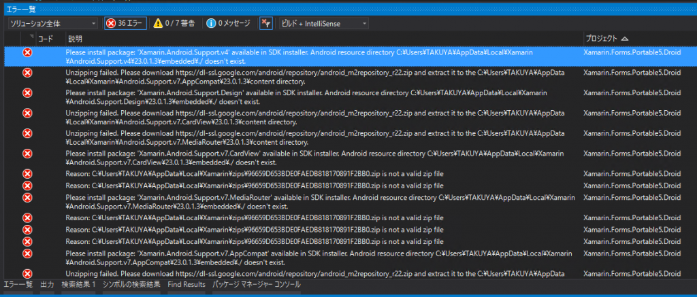
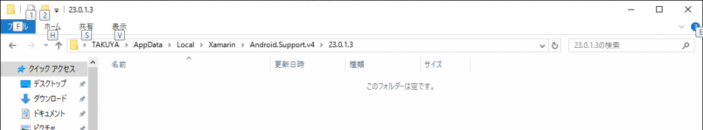

前回はUWPでビルドができない問題を解決しました。
Problem
Xamarinの不安定さは何度も言及していますが、こうも問題に何度も遭遇すると悲しくなります。
今回は、Androidのビルドが通らなくなりました。直前の手順もうろ覚えなのですが…

Unzipped failed?
{kind=link}
エラーは、
Unzipping failed. Please download https://dl-ssl.google.com/android/repository/android_m2repository_r22.zip and extract it to the C:\Users\XXXXXX\AppData\Local\Xamarin\Android.Support.v4\23.0.1.3\content directory.
とあります。
たしかに、そのフォルダにcontentフォルダはありませんでした。

からっぽ
{kind=link}
Resolution
指示に従うと、落としてきたandroid_m2repository_r22.zipは135MBもあります。
これが4G回線とかで作業中に発生したらと思うのちょっとゾッとします。
続いて、これを解凍します。
解凍すると、m2repositoryというフォルダが出てくるので、これを先ほどの指示に従い、contentフォルダを作成し、その下にm2repositoryフォルダをコピーします。
結果としては、
- C:\Users\XXXXXX\AppData\Local\Xamarin\Android.Support.Design
- C:\Users\XXXXXX\AppData\Local\Xamarin\Android.Support.v4
- C:\Users\XXXXXX\AppData\Local\Xamarin\Android.Support.v7.AppCompat
- C:\Users\XXXXXX\AppData\Local\Xamarin\Android.Support.v7.CardView
- C:\Users\XXXXXX\AppData\Local\Xamarin\Android.Support.v7.MediaRouter
- C:\Users\XXXXXX\AppData\Local\Xamarin\Android.Support.v7.RecyclerView
の6カ所に同じような処置を実行しました。
これによりビルドが通るようになりました。
Conclusion
英語はきちんと読みましょう、ということですね。
別に英語読むのは苦ではないですが、どうしても日本語と比べると時間あたりで理解する文字数が減るので面倒に感じるんですよね…